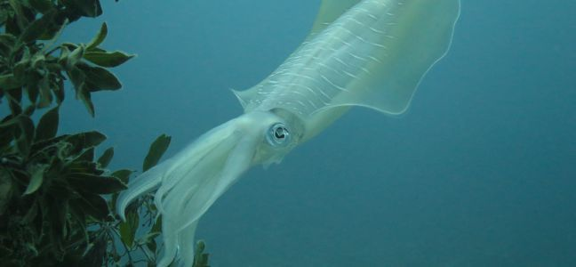

Attention ! Il ne faut pas confondre une poulpe avec un calamar, malgrès le fait que il y a de fortes ressemblances ! Ce qui les différenciés est le fait que un poulpe ne possède que 8 bras alors que le calamar en possède 10 !
Les calmars sont des animaux marins, au corps mou, pourvus de tentacules, et qui font partie de la classe des céphalopodes, comme les seiches et les pieuvres.
Il en existe environ 300 espèces, qui n'ont pas toutes un nom commun, et sont simplement appelées "calmar". Les calmars forment un grand groupe, l'ordre des teuthides
Apparu au début du Jurassique, ces animaux marins regroupant près de 300 espèces.